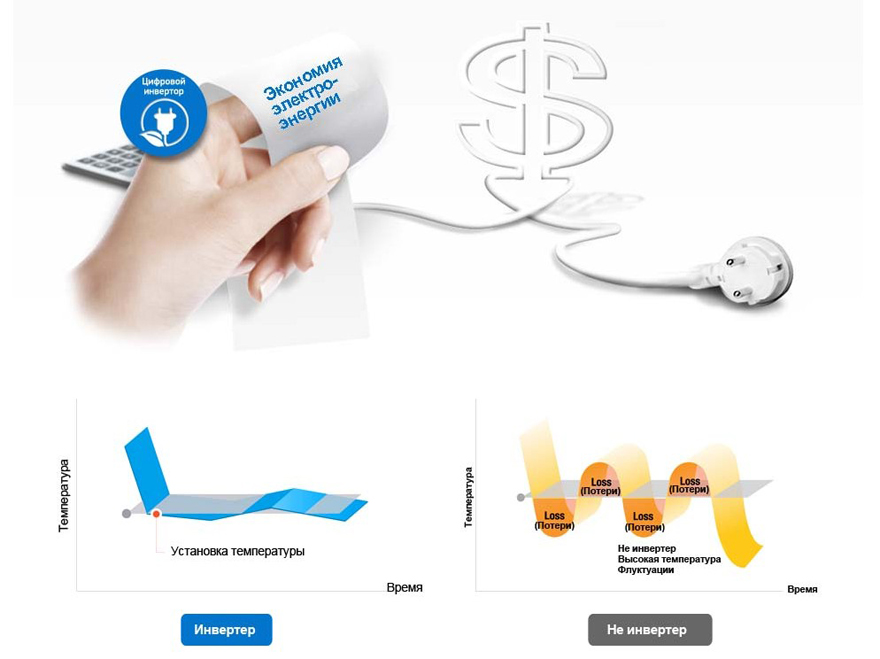
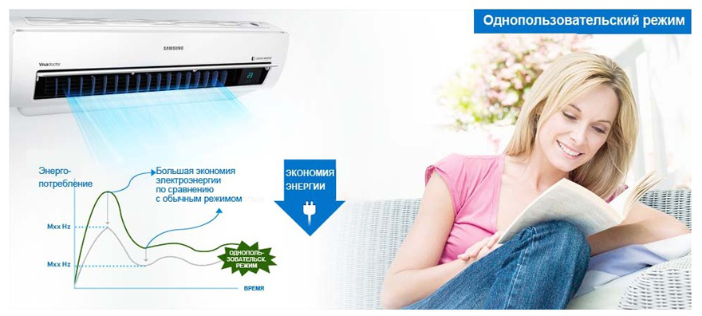
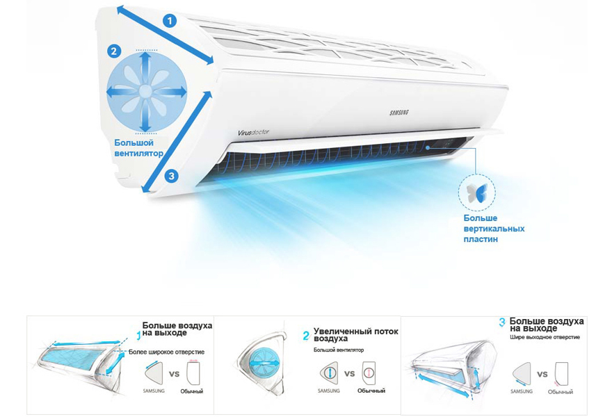
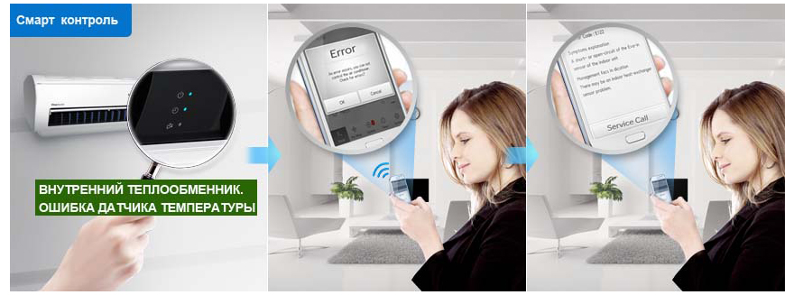
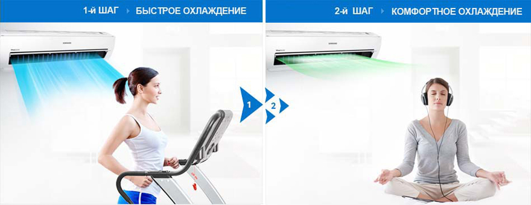
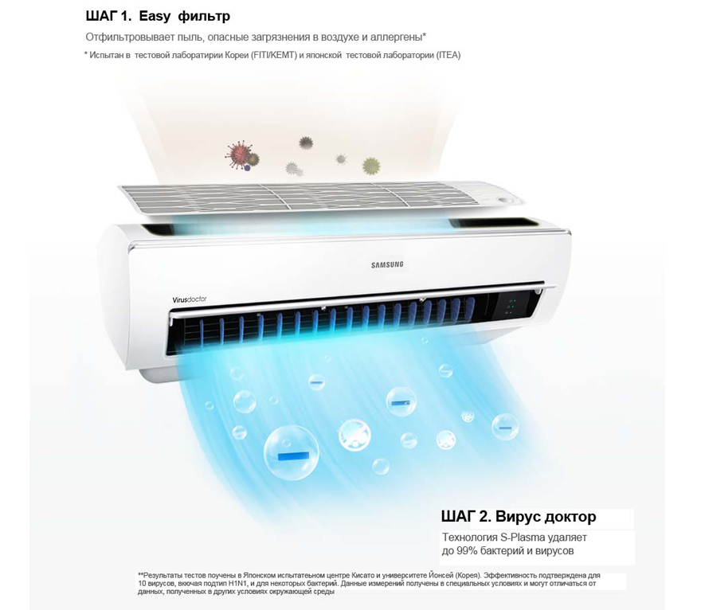
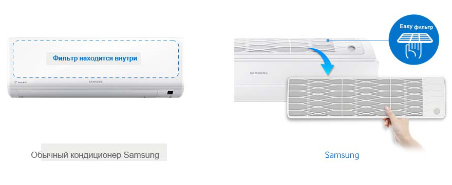

Inteligent și economic
Aparatul de aer condiționat Samsung este echipat cu un motor invertor inteligent economic. Este capabil să mențină temperatura setată fără a porni sau opri frecvent. datorită căreia consumă cu 70% mai puțină energie electrică. Invertorul digital vă permite să mențineți o temperatură confortabilă pentru o lungă perioadă de timp cu un consum minim de energie.

Economisiți energie când sunteți singur în casă
În modul Single User, nu este nevoie să porniți și să opriți aerul condiționat tot timpul pentru a economisi energie. În acest mod, compresorul și ventilatorul funcționează suficient de mult pentru a menține temperatura necesară și se opresc automat atunci când parametrii atmosferici doriți în cameră sunt atinși. Ca urmare, aparatul de aer condiționat folosește mai puțină energie electrică și reduce facturile de energie și oferă un mediu interior mai răcoros. Date bazate pe modul normal față de consumul de energie în modul utilizator unic.

Se răcește mai repede, mai departe și mai larg
Noul aparat de aer condiționat Samsung este o dezvoltare complet nouă pentru o răcire mai eficientă. Designul triunghiular unic are o deschidere de admisie mai largă, care permite mai mult aer să fie aspirat în aparatul de aer condiționat. În plus, orificiul de admisie este mai larg și mai înclinat, iar jaluzelele speciale cu lame în V suplimentare și un ventilator mai puternic ajută, de asemenea, la răcirea aerului de admisie mai rapid. Ca urmare, aerul proaspăt ajunge în fiecare colț al camerei.

Stabilitate de performanță
Aparatul de aer condiționat Samsung este capabil să funcționeze în cele mai dure condiții atmosferice. Triple Protector Plus protejează compresorul și controlerul de defecțiunile de la rețea fără a fi nevoie de un stabilizator de tensiune. Părțile aparatului de aer condiționat au un strat anticoroziv, care protejează carcasa și condensatorul de rugină. Condensatorul mare și circulația optimă a aerului în sistem asigură funcționarea neîntreruptă la temperaturi de până la 58 ° C.

Sistem simplu de diagnosticare a defectelor
Aerul condiționat Samsung este echipat cu Smart Check, un sistem automat de diagnosticare a defecțiunilor. Acest sistem vă permite să diagnosticați defecțiunile într-un stadiu incipient și să luați rapid decizii pentru a le remedia folosind aplicația instalată pe telefonul smartphone . Drept urmare, economisiți timp și eliminați necesitatea depanării manuale sau a apelurilor de service, ceea ce economisește timp și costuri pentru reparații. Compatibil cu dispozitive iPhone și Android. Cu toate acestea, această funcție nu înlocuiește nevoia de service periodic.

Răcire cu aer mai rapidă și mai confortabilă
Aerul condiționat Samsung în modul Fast Cool răcește foarte repede aerul din cameră. Apoi trece la modul Comfort Cool pentru a menține temperatura setată. Ca urmare, nu este nevoie să comutați manual modul de funcționare al aparatului de aer condiționat sau să îl porniți și să îl opriți.

Elimină virușii
Virus Doctor și Easy Filter elimină praful, contaminanții dăunători și alergenii aerieni, precum și bacteriile și virusurile, inclusiv virusurile gripale A și Corona * - mai întâi cu un filtru și apoi cu Virus Doctor. Ca urmare, aerul dvs. va fi întotdeauna curat și sănătos, * Testat la Kitasato Environmental Science Center (Japonia) și Yonsei Univ. (Coreea) / Korea Testing Laboratory (FITI / KEMTI) și Japan Testing Laboratory (ITEA). Elimină în mod eficient 4 tipuri de viruși, inclusiv subtipul H1N1, precum și unele tipuri de bacterii. Datele au fost obținute în condiții specifice și pot varia în funcție de factorii de mediu.

Ușurința de întreținere
Spre deosebire de aparatele de aer condiționat convenționale cu acces incomod la elementele filtrante, noul aparat de aer condiționat Samsung este echipat cu un filtru situat pe panoul superior. Poate fi ușor îndepărtat și reintrodus fără a fi nevoie să deschideți capacul sau să îl scoateți cu dificultate. Acoperirea antibacteriană a elementului filtrant îndepărtează contaminanții dăunători și alergenii din aer.
